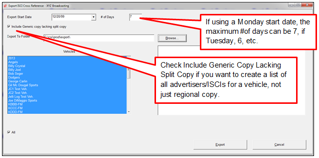
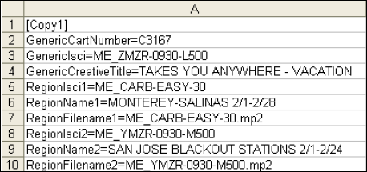
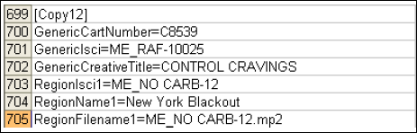
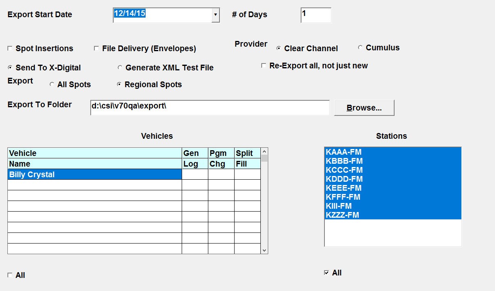

X-Digital Export Procedures
These are the recommended Affiliate System procedures to produce an X-Digital export.
Step 1: ISCI Cross Reference
Run the ISCI Cross Reference export, which is a list of the audio file names that will be airing.
- The audio file name must exactly match the audio name in X-Digital
- Give this to your engineering department. They will use this list to ensure that all spots are loaded into X-Digital for airing
- X-Digital has characters that are not allowed, see Appendix A for the complete list and replacement characters

ISCI Cross Reference Example
When the ISCI Cross Reference file is created, one file is created for each vehicle.
The Generic Cart, ISCI and Creative Title are listed followed by each region and its information. The list continues for each piece of copy that is airing for the vehicle and any of the regional information defined for the copy.


Step 2: Generate XML Test File
You can generate an XML test file to save for your records. If there are any questions about what was sent to XDS, this can be used as reference verification.
To generate a test file, select the “Generate XML Test File” radio button when running the export.
Step 3: Optional Check
If you want to see the regional copy that was assigned to a specific advertiser, you can run the Advertiser Fulfillment Report.
Step 4: Export to X-Digital
When ready to export directly to X-Digital, bring up the X-Digital export screen and select the “Send to X-Digital” radio button.

Enter the export start date and the number of days you wish to generate the export for. You can generate a maximum of 7 days at a time. Then select from the following options as needed:
- Spot Insertions: For each day on each station, Counterpoint sends X-Digital information that contains the program codes (vehicle name), hour number, break number, and position (if applicable) that contains a Regional spot, along with the ISCI code for that Regional spot.
- File Delivery: When checked on, the File Delivery information will be sent to X-Digital. (Note that the File Delivery information is only for by Break avail form vehicles. It is not used with ISCI avail form vehicles. In addition, the File Delivery part of the export is not required if the X-Digital Head End is set to “inferred”.) Note: If File Delivery is the only export selected and Agreement (authorizations) is selected in Affiliate -> Site Options, the system will not create or send the Agreement/Authorization data. The authorization data will continue to be sent when Spot Insertions is selected.
- Re-export All, Not Just New: When the export is generated, all spots successfully sent are not included in any re-exports. Checking this box will allow all spots to be re-exported, not just those spots that were not previously exported. This question is not checked on by default. You should only use this option if the export was interrupted. For normal revised logs, this export is not necessary, since all spots do not need to be resent.
- If you have a dual head end, you will see two radio buttons next to the word Provider: Cumulus and Clear Channel. If applicable, and the XML.INI is properly defined, you will be able to select the appropriate XDS Head End in the Export screen. These options will not appear if using a single X-Digital Head End.
- Send to X-Digital: This sends the spot information to the X-Digital head end unit based on the information in the XML.INI.
- Generate XML Test File: This creates a test file that can be reviewed prior to export.
- All Spots: The export will include all spots, regardless of whether they have regional copy or not.
- Regional Spots: The export will only send those spots that have regional copy associated with it. X-Digital will replace generic audio information with copy split information.
- Export to Folder: The export location defined on the Affiliat.ini appears here. It can be changed to a different folder if needed using the Browse button.
- Export: Select the Vehicles and Stations to export, and click the Export button when ready to export.
Selecting the Vehicles
The list of vehicles that appear in the vehicle list is dependent upon vehicle setup and whether you are using the Export Center.
If using the Export Center, you must select all vehicles to be included in the X-Digital Export Screen in the Export Center specification screen. This is because the system assumes that since you are using the Export Center, only those vehicles defined in the specifications screen are the vehicles that you wish to include in the export, regardless of the vehicle set ups.
- For example, if there is a Billy Crystal XDS export on the Export Center, only Billy Crystal will be appearing in the vehicle list on the X-Digital export screen
- This will be the case even if Billy Crystal didn’t have a vehicle ID or Program ID defined, and even if there were other vehicles that did have a vehicle ID or program ID defined
- If there is no X-Digital export defined on the Export Center, then the vehicles listed on the X-Digital vehicle list will only include those vehicles that are either HB or HBP and have a Program ID defined, or that are using the ISCI avail form and have a Vehicle ID defined
- Vehicles that have no vehicle ID or program ID defined will not appear in the vehicle list (because it is assumed they are not being used for X-Digital)
Gen Log/Pgm Chg/Split Fill
Before running the export, check the Gen Log, Pgm Chg, and Split Fill fields. These fields are used to indicate whether the log has been generated, whether there is a programming alert, and whether there are missing split fills.
Gen Log: is used to indicate whether the final log has been generated or not for the vehicle, using the Export start date and number of days to determine the date period. If the log has been generated, the background color of the field will be white. If the log has not been generated, the background color of the field will be red. If the Gen Log field is red, then the log should be generated before exporting that vehicle/date. The cell will also turn red if the final log has been generated, but spots have been changed (or copy was changed) and the log was not reprinted. In this case, reprint the log to clear the red background color from the Gen Log field.
Pgm Chg: this field turns red when there is a programming change alert for the vehicle/date. The programming change alert appears when programming has been changed for a vehicle on the Programming screen. After programming has been changed, typically agreements will need to be updated. After agreements have been updated, the alert can be cleared by pressing the Alert button (on the Affiliate system), selecting the "Agreement alert" radio button, then selecting the row with the alert and pressing the Clear button to clear it. Once the alert has been cleared, the “Pgm Chg” field on the web export screen will no longer be red.
Split Fill: if Split Networks are enabled in Traffic Site Options, the Split Fill column will be shown. This will turn red if the log has been generated for the vehicle, and there are split network spots in the date period that the log is being generated for, and there is no matching split fill definition for that vehicle/date span on the Split Fill screen (accessed on the Logs screen). If the field is red, enter split fills on the Split Fill screen to change the cell to white.
Once all the parameters have been selected and there are no red warning alerts in the Gen Log, Pgm Chg, and Split Fill fields, press the Export button to run the export.
Results Box
All export results will appear in the Results box, and can also be reviewed using the Messages Viewer Utility.
Successful export messages will appear in green, warning or error messages will appear in red, and basic information will appear in black.
The X-Digital Spot Insertions, File Delivery, Agreement, Program, and Station export files are saved in the export folder and will get appended to in certain circumstances rather than getting overwritten. Note that this only applies to the files themselves that are created in the Export folder, not to the actual data that gets sent to X-Digital. The X-digital station, agreement, and program exports store the date created in the filename, so if you run those for the same day, they will be appended. The X-digital export Spot Insertions and File Delivery export filenames contain the date for which it was generated, so if you generate an export for the same date that will get appended to. If you generate the export for a different date, new export files will be created.
‘New Export’ and ‘Re-Export’ spots are tallied and displayed in the results window. This information can also be reviewed in the Messages Viewer screen and the XDigitalExportLog. The ‘New Export’ count includes all spots that had previously not been sent, while the ‘Re-Export’ file tallies all spots that had been altered in some fashion from their previous export and re-sent.
Each time an export is generated, the system will remove old history records from the internal XHT file used to track changes for re-exporting, retaining two weeks of information.